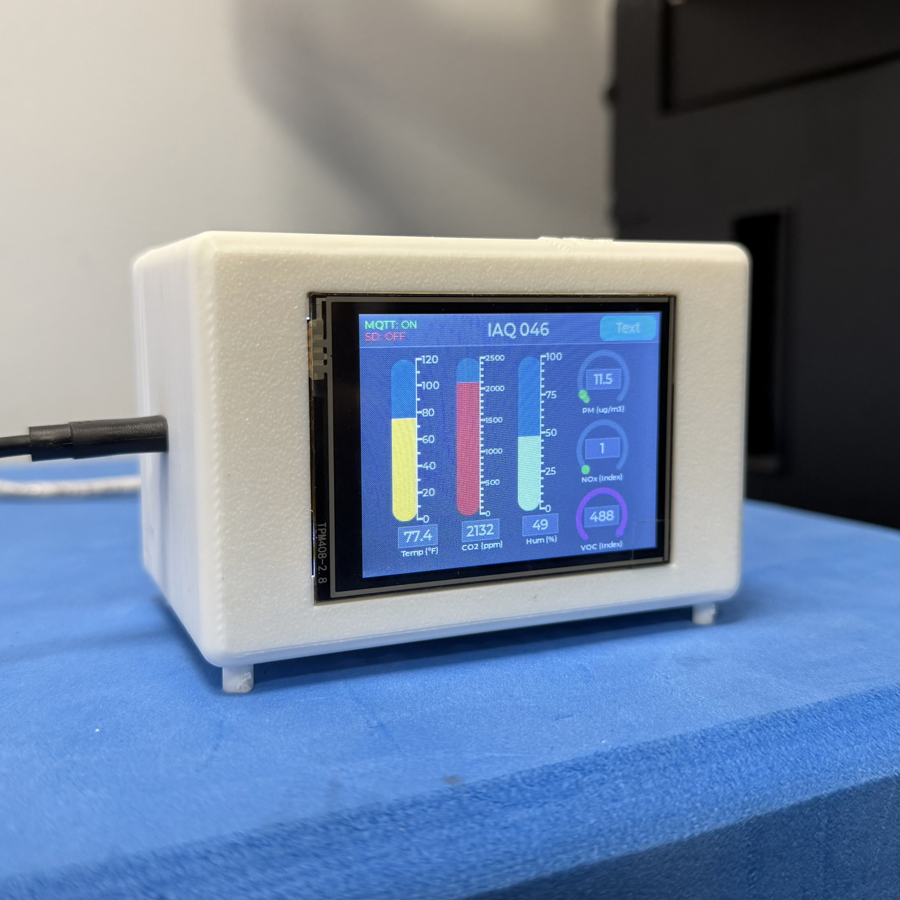
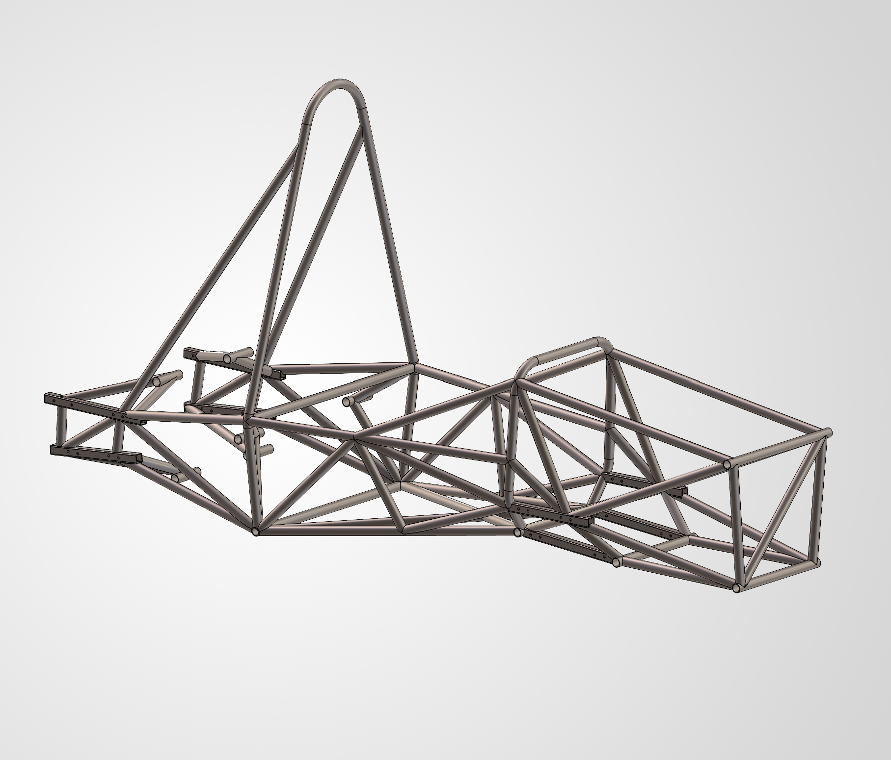
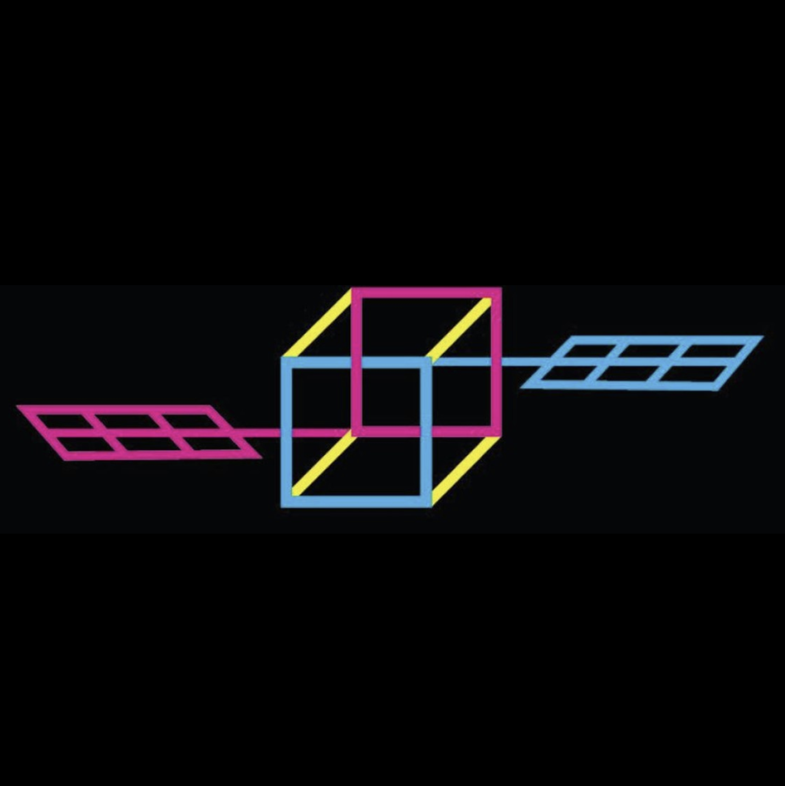
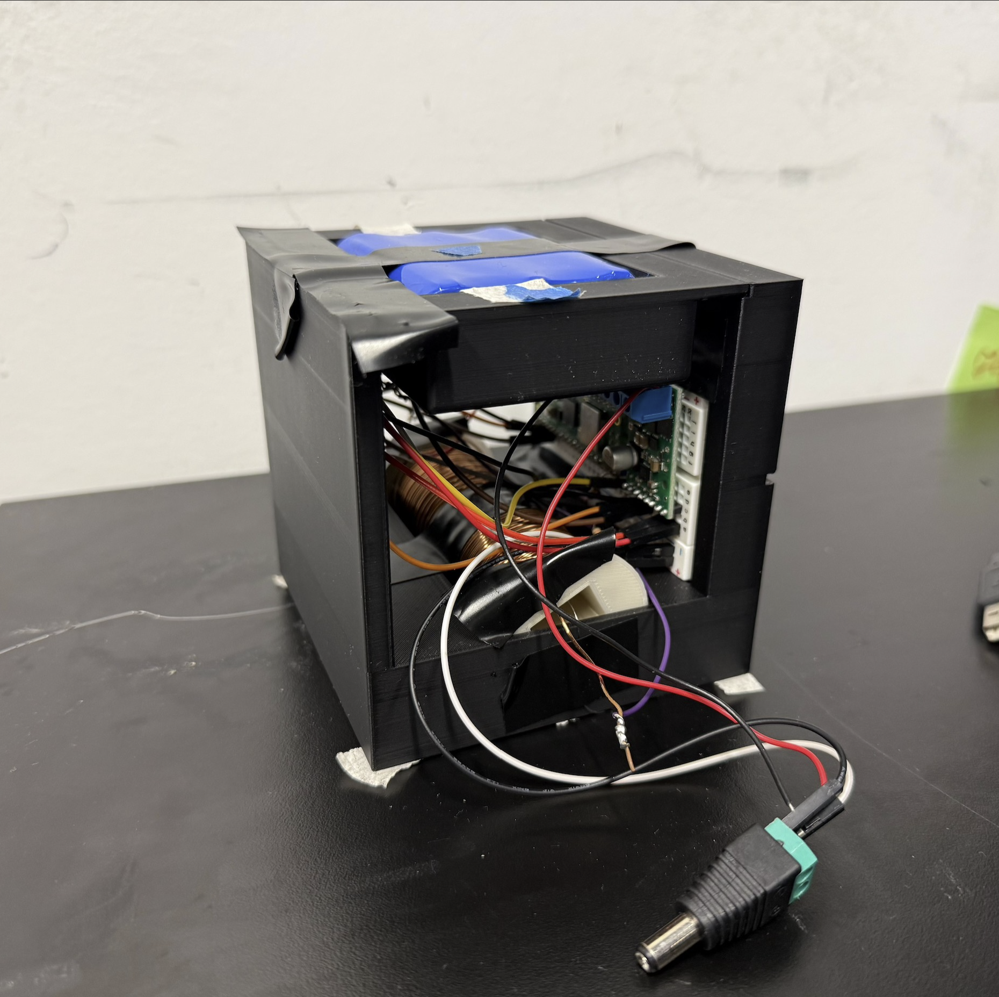
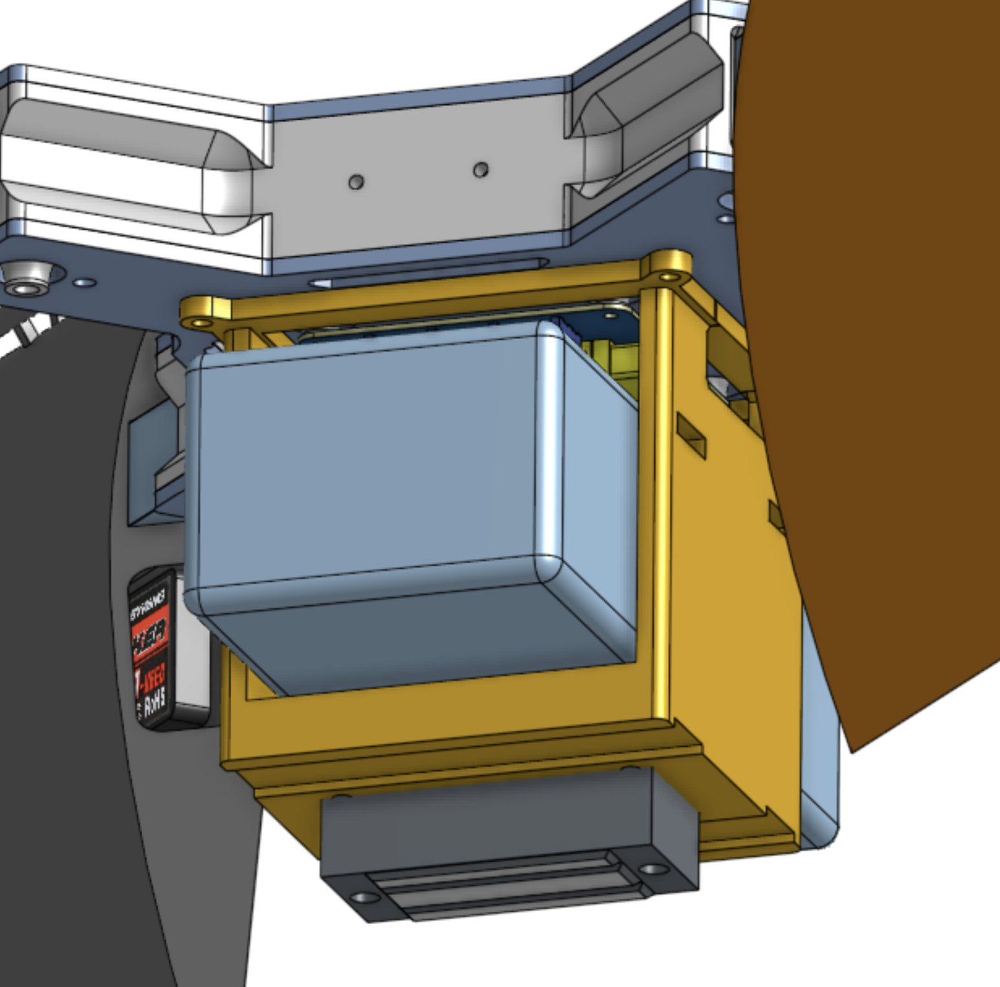

Designed and iterated a wireless environmental sensor enclosure from an initial laser-cut acrylic prototype to 3D-printed configurations, integrating an air-quality sensor, ESP32-based display, RF antenna, LiPo battery, and power electronics. Evaluated tradeoffs between component protection, sensor accessibility, cable routing, thermal behavior, and manufacturability.
Developed a 3D-printable hinged jig to hold internal enclosure walls during assembly, reducing assembly time from over 10 minutes to under 3 minutes. Iterated sensor placement and enclosure geometry after identifying temperature differences between enclosure configurations.
Investigated temperature measurements against a reference thermometer, determining that enclosure-induced thermal bias was not the sole source of error. Current work focuses on characterizing temperature-dependent sensor error and developing an appropriate calibration approach.

Developed a Formula SAE space-frame steel tube chassis in SolidWorks, incorporating suspension hardpoints, engine mounting, and driver ergonomics while maintaining optimal load paths.
Built full-scale mockups of chassis designs to evaluate driver egress, visibility, and ergonomics using PVC tubes. Prepared chassis for tube notching by mitering tubes in size order to create weld-ready joints, as well as creating assembly drawings and a tube cut list.
Performing FEA in ANSYS to determine torsional rigidity upon suspension load application. Currently investigating shear panel implementation to increase rigidity.


Supported the Attitude Determination and Control System (ADCS) development of a CubeSat through mechanical test fixture development.
Designed and fabricated a water-supported test setup for one-axis magnetorquer functionality. Ensured easy assembly and component accessibility, as well as center-of-mass placement about the central vertical axis.
Performed preliminary calculations for aerostatic bearing design for use in a three-axis magnetorquer test rig, investigating required supply pressures and nozzle geometries to produce sufficient lifting force.
Traced key signal paths in the Simulink vehicle model and produced documentation for new members in preparation for adding actuator and sensor noise to enhance model realism.

Supported the mechanical development of a vertical takeoff and landing aircraft platform through the design of a mounting system for the battery allowing for interfacing with the power distribution board, as well as hardpoints to mount a LiDAR module.
The design process required consideration of sensor placement, structural attachment, accessibility, and integration with the surrounding aircraft geometry.

Fabricated lightweight flapping-wing assemblies for an open-source flapping-wing micro-air vehicle using 3D-printed PLA frames and lightweight membranes. Studied adhesion techniques between membrane and structure through chemical adhesion and material heating. Considered tradeoffs between manufacturing time, ease of manufacturing, and quality of wings produced.
Responsibilities included additive manufacturing, fabrication process development, and documentation of design iterations and impacts on frame-membrane adhesion.